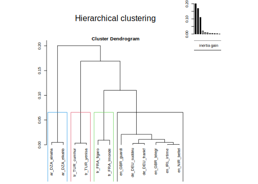
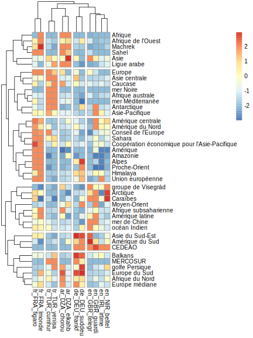

Chapter 5 Hypercube
library(knitr)
library(dplyr)
library(quanteda)
library(data.table)
library(tidytext)
library(FactoMineR)
library(Factoshiny)Warning: le package 'Factoshiny' a été compilé avec la version R 4.1.1Le chargement a nécessité le package : shinyLe chargement a nécessité le package : FactoInvestigateWarning: le package 'FactoInvestigate' a été compilé avec la version R 4.1.1library(explor)Warning: le package 'explor' a été compilé avec la version R 4.1.15.1 Objectives
We have created a list of tags relate to world regions for news published in 14 newspapers. We propose now to build an hypercube in order to explore the results.
5.2 Prepare data
5.2.1 Load corpus
qd<-readRDS("quanteda/corpus_worldreg_001.RDS")5.2.2 Load hypercube function
hypercube <-function(qd = qd,
when = "date",
when_cut = "year",
who = "source",
where1 = "tags",
where2 = "tags")
{
# create data.table accroding to parameter chosen
don<-docvars(qd)
df<-data.table(id = docid(qd),
who = don[,who],
when = as.character(cut(don[,when],breaks=when_cut)),
where1 = don[,where1],
where2 = don[,where2])
# add code _no_ for empty fields
df$where1[df$where1==""]<-"_no_"
df$where2[df$where2==""]<-"_no_"
# unnest where1
df<-unnest_tokens(df,where1,where1,to_lower=F)
# unnest where2
df<-unnest_tokens(df,where2,where2,to_lower=F)
# define number of occurence by id
nb<-df[,.N,list(id)] %>% mutate(wgt = 1/N) %>% select(-N)
df<-df %>% left_join(nb)
rm(nb)
# Aggregate
hc<- df[,.( tags = .N, news=sum(wgt)) ,.(who, when,where1,where2)]
# Convert date to time
hc$when<-as.Date(hc$when)
# return hypercube
return(hc)
}5.2.3 Create Hypercube
hc_reg <- hypercube(qd = qd,
when = "date",
when_cut = "months",
who = "source",
where1 = "regs",
where2 = "regs")Joining, by = "id"kable(head(hc_reg))| who | when | where1 | where2 | tags | news |
|---|---|---|---|---|---|
| fr_FRA_figaro | 2019-01-01 | no | no | 3417 | 3417 |
| fr_FRA_figaro | 2019-01-01 | Q46 | Q46 | 15 | 15 |
| fr_FRA_figaro | 2019-01-01 | Q4918 | Q4918 | 2 | 2 |
| fr_FRA_figaro | 2019-01-01 | Q7204 | Q7204 | 1 | 1 |
| fr_FRA_figaro | 2019-01-01 | Q51 | Q51 | 1 | 1 |
| fr_FRA_figaro | 2019-01-01 | Q18 | Q18 | 1 | 1 |
5.2.4 Load Wikidata entity names
reg_def<-readRDS("dict/worldreg001_def.RDS")
tab_def<-dcast(reg_def, formula =id~lang, value.var="label")Warning in dcast(reg_def, formula = id ~ lang, value.var = "label"): The
dcast generic in data.table has been passed a data.frame and will attempt to
redirect to the reshape2::dcast; please note that reshape2 is deprecated, and
this redirection is now deprecated as well. Please do this redirection yourself
like reshape2::dcast(reg_def). In the next version, this warning will become an
error.kable(head(tab_def))| id | ar | de | en | fr | tr |
|---|---|---|---|---|---|
| Q1070940 | <U+0622><U+0633><U+064A><U+0627> <U+0648><U+0627><U+0644><U+0645><U+062D><U+064A><U+0637> <U+0627><U+0644><U+0647><U+0627><U+062F><U+0626> | Asien-Pazifik | Asia-Pacific | Asie-Pacifique | Asya-Pasifik |
| Q11708 | <U+062C><U+0646><U+0648><U+0628> <U+0634><U+0631><U+0642> <U+0622><U+0633><U+064A><U+0627> | Südostasien | Southeast Asia | Asie du Sud-Est | Güneydogu Asya |
| Q1239 | <U+0627><U+0644><U+0645><U+062D><U+064A><U+0637> <U+0627><U+0644><U+0647><U+0646><U+062F><U+064A> | Indischer Ozean | Indian Ocean | océan Indien | Hint Okyanusu |
| Q12585 | <U+0623><U+0645><U+0631><U+064A><U+0643><U+0627> <U+0627><U+0644><U+0644><U+0627><U+062A><U+064A><U+0646><U+064A><U+0629> | Lateinamerika | Latin America | Amérique latine | Latin Amerika |
| Q128011 | <U+062C><U+0632><U+0631> <U+0627><U+0644><U+0623><U+0646><U+062A><U+064A><U+0644> <U+0627><U+0644><U+0643><U+0628><U+0631><U+0649> | Große Antillen | Greater Antilles | Grandes Antilles | Büyük Antiller |
| Q12824780 | <U+0622><U+0633><U+064A><U+0627> <U+0627><U+0644><U+0635><U+063A><U+0631><U+0649> | Kleinasien | Asia Minor | Asie mineure | Anadolu |
5.3 World Region
5.3.1 Which % of news ?
What is the percentage of news where at less one world region is mentionned ?
hc_reg$tagged<-hc_reg$where1!="_no_"
df<-hc_reg[,list(nb = sum(news)), list(who, tagged)] %>%
dcast(formula = who~tagged, value.var = "nb")
names(df)<-c("media","No", "Yes")
df$Tot = df$No+df$Yes
df$Pct = 100*df$Yes/df$Tot
df<-df[order(df$Pct)]
kable(df, digits=2)| media | No | Yes | Tot | Pct |
|---|---|---|---|---|
| en_NIR_beltel | 99494 | 438 | 99932 | 0.44 |
| fr_TUN_realit | 22886 | 156 | 23042 | 0.68 |
| fr_TUN_presse | 11466 | 87 | 11553 | 0.75 |
| en_IRL_irtime | 107619 | 860 | 108479 | 0.79 |
| ar_TUN_babnet | 42258 | 391 | 42649 | 0.92 |
| fr_TUN_ecomag | 12637 | 157 | 12794 | 1.23 |
| tr_TUR_cumhur | 132014 | 1699 | 133713 | 1.27 |
| fr_FRA_figaro | 126984 | 1823 | 128807 | 1.42 |
| en_GBR_telegr | 41152 | 651 | 41803 | 1.56 |
| de_DEU_suddeu | 34886 | 558 | 35444 | 1.57 |
| fr_FRA_lmonde | 48946 | 785 | 49731 | 1.58 |
| tr_TUR_yenisa | 96089 | 1549 | 97638 | 1.59 |
| de_DEU_frankf | 86352 | 1961 | 88313 | 2.22 |
| en_GBR_guardi | 76092 | 1783 | 77875 | 2.29 |
We observe that the share is comprised between 0.44% (Belfast Telegraph, Ulster) and 2.29% (The Guardian, United Kingdom).
5.3.2 Which regions are the most mentionned ?
Iw we put together all newspapers, we obtain the following table
# Compute
df<-hc_reg[where1 !="_no_",list(nb = sum(news)), list(where1)]
df<-merge(tab_def,df,by.x="id",by.y="where1",all.x=F,all.y=T)
df<-df[order(df$nb, decreasing = T),]
row.names(df)<-1:dim(df)[1]
kable(df, digits=0,row.names = T)| id | ar | de | en | fr | tr | nb | |
|---|---|---|---|---|---|---|---|
| 1 | Q46 | <U+0623><U+0648><U+0631><U+0648><U+0628><U+0627> | Europa | Europe | Europe | Avrupa | 4546 |
| 2 | Q828 | <U+0627><U+0644><U+0623><U+0645><U+0631><U+064A><U+0643><U+062A><U+0627><U+0646> | Amerika | Americas | Amérique | Amerika | 2431 |
| 3 | Q15 | <U+0625><U+0641><U+0631><U+064A><U+0642><U+064A><U+0627> | Afrika | Africa | Afrique | Afrika | 1022 |
| 4 | Q4918 | <U+0627><U+0644><U+0628><U+062D><U+0631> <U+0627><U+0644><U+0623><U+0628><U+064A><U+0636> <U+0627><U+0644><U+0645><U+062A><U+0648><U+0633><U+0637> | Mittelmeer | Mediterranean Sea | mer Méditerranée | Akdeniz | 912 |
| 5 | Q12824780 | <U+0622><U+0633><U+064A><U+0627> <U+0627><U+0644><U+0635><U+063A><U+0631><U+0649> | Kleinasien | Asia Minor | Asie mineure | Anadolu | 457 |
| 6 | Q7204 | <U+0627><U+0644><U+0634><U+0631><U+0642> <U+0627><U+0644><U+0623><U+0648><U+0633><U+0637> | Mittlerer Osten | Middle East | Moyen-Orient | Orta Dogu | 332 |
| 7 | Q48 | <U+0622><U+0633><U+064A><U+0627> | Asien | Asia | Asie | Asya | 293 |
| 8 | Q66065 | <U+0627><U+0644><U+0633><U+0627><U+062D><U+0644> | Sahelzone | Sahel | Sahel | Sahel | 240 |
| 9 | Q98 | <U+0627><U+0644><U+0645><U+062D><U+064A><U+0637> <U+0627><U+0644><U+0647><U+0627><U+062F><U+0626> | Pazifischer Ozean | Pacific Ocean | océan Pacifique | Büyük Okyanus | 200 |
| 10 | Q25322 | <U+0627><U+0644><U+0645><U+0646><U+0637><U+0642><U+0629> <U+0627><U+0644><U+0642><U+0637><U+0628><U+064A><U+0629> <U+0627><U+0644><U+0634><U+0645><U+0627><U+0644><U+064A><U+0629> | Arktis | Arctic | Arctique | Arktika | 180 |
| 11 | Q97 | <U+0627><U+0644><U+0645><U+062D><U+064A><U+0637> <U+0627><U+0644><U+0623><U+0637><U+0644><U+0633><U+064A> | Atlantischer Ozean | Atlantic Ocean | océan Atlantique | Atlas Okyanusu | 180 |
| 12 | Q1286 | <U+0627><U+0644><U+0623><U+0644><U+0628> | Alpen | Alps | Alpes | Alpler | 174 |
| 13 | Q28227 | <U+0627><U+0644><U+0645><U+063A><U+0631><U+0628> <U+0627><U+0644><U+0639><U+0631><U+0628><U+064A> | Maghreb | Maghreb | Maghreb | Magrip | 136 |
| 14 | Q27394 | <U+0623><U+0641><U+0631><U+064A><U+0642><U+064A><U+0627> <U+0627><U+0644><U+062C><U+0646><U+0648><U+0628><U+064A><U+0629> | Südliches Afrika | Southern Africa | Afrique australe | Güney Afrika | 126 |
| 15 | Q6583 | <U+0627><U+0644><U+0635><U+062D><U+0631><U+0627><U+0621> <U+0627><U+0644><U+0643><U+0628><U+0631><U+0649> | Sahara | Sahara | Sahara | Sahra | 122 |
| 16 | Q12585 | <U+0623><U+0645><U+0631><U+064A><U+0643><U+0627> <U+0627><U+0644><U+0644><U+0627><U+062A><U+064A><U+0646><U+064A><U+0629> | Lateinamerika | Latin America | Amérique latine | Latin Amerika | 122 |
| 17 | Q664609 | <U+0627><U+0644><U+0643><U+0627><U+0631><U+064A><U+0628><U+064A> | Karibik | Caribbean | Caraïbes | Karayipler | 110 |
| 18 | Q51 | <U+0627><U+0644><U+0642><U+0627><U+0631><U+0629> <U+0627><U+0644><U+0642><U+0637><U+0628><U+064A><U+0629> <U+0627><U+0644><U+062C><U+0646><U+0648><U+0628><U+064A><U+0629> | Antarktika | Antarctica | Antarctique | Antarktika | 105 |
| 19 | Q2841453 | NA | Amazonien | Amazonia | Amazonie | NA | 104 |
| 20 | Q48214 | <U+0634><U+0631><U+0642> <U+0623><U+062F><U+0646><U+0649> | Naher Osten | Near East | Proche-Orient | Yakin Dogu | 84 |
| 21 | Q35942 | <U+0628><U+0648><U+0644><U+0646><U+064A><U+0632><U+064A><U+0627> | Polynesien | Polynesia | Polynésie | Polinezya | 82 |
| 22 | Q18 | <U+0623><U+0645><U+0631><U+064A><U+0643><U+0627> <U+0627><U+0644><U+062C><U+0646><U+0648><U+0628><U+064A><U+0629> | Südamerika | South America | Amérique du Sud | Güney Amerika | 74 |
| 23 | Q23522 | <U+0627><U+0644><U+0628><U+0644><U+0642><U+0627><U+0646> | Balkanhalbinsel | Balkans | Balkans | Balkanlar | 71 |
| 24 | Q5401 | <U+0623><U+0648><U+0631><U+0627><U+0633><U+064A><U+0627> | Eurasien | Eurasia | Eurasie | Avrasya | 65 |
| 25 | Q11708 | <U+062C><U+0646><U+0648><U+0628> <U+0634><U+0631><U+0642> <U+0622><U+0633><U+064A><U+0627> | Südostasien | Southeast Asia | Asie du Sud-Est | Güneydogu Asya | 56 |
| 26 | Q27611 | <U+0623><U+0645><U+0631><U+064A><U+0643><U+0627> <U+0627><U+0644><U+0648><U+0633><U+0637><U+0649> | Zentralamerika | Central America | Amérique centrale | Orta Amerika | 48 |
| 27 | Q166131 | <U+062C><U+0632><U+0631> <U+0627><U+0644><U+0623><U+0646><U+062A><U+064A><U+0644> | Antillen | Antilles | Antilles | Antiller | 46 |
| 28 | Q34675 | <U+0627><U+0644><U+062E><U+0644><U+064A><U+062C> <U+0627><U+0644><U+0639><U+0631><U+0628><U+064A> | Persischer Golf | Persian Gulf | golfe Persique | Basra Körfezi | 46 |
| 29 | Q37660 | <U+0628><U+062D><U+0631> <U+0627><U+0644><U+0635><U+064A><U+0646> <U+0627><U+0644><U+062C><U+0646><U+0648><U+0628><U+064A> | Südchinesisches Meer | South China Sea | mer de Chine méridionale | Güney Çin Denizi | 43 |
| 30 | Q49 | <U+0623><U+0645><U+0631><U+064A><U+0643><U+0627> <U+0627><U+0644><U+0634><U+0645><U+0627><U+0644><U+064A><U+0629> | Nordamerika | North America | Amérique du Nord | Kuzey Amerika | 40 |
| 31 | Q27468 | <U+0623><U+0648><U+0631><U+0648><U+0628><U+0627> <U+0627><U+0644><U+0634><U+0631><U+0642><U+064A><U+0629> | Osteuropa | Eastern Europe | Europe de l’Est | Dogu Avrupa | 36 |
| 32 | Q18869 | <U+0627><U+0644><U+0642><U+0648><U+0642><U+0627><U+0632> | Kaukasus | Caucasus | Caucase | Kafkasya | 34 |
| 33 | Q27381 | <U+0634><U+0645><U+0627><U+0644> <U+0623><U+0641><U+0631><U+064A><U+0642><U+064A><U+0627> | Nordafrika | North Africa | Afrique du Nord | Kuzey Afrika | 31 |
| 34 | Q27275 | <U+0622><U+0633><U+064A><U+0627> <U+0627><U+0644><U+0648><U+0633><U+0637><U+0649> | Zentralasien | Central Asia | Asie centrale | Orta Asya | 30 |
| 35 | Q5451 | <U+0647><U+064A><U+0645><U+0627><U+0644><U+0627><U+064A><U+0627> | Himalaya | Himalayas | Himalaya | Himalaya Daglari | 30 |
| 36 | Q4412 | <U+063A><U+0631><U+0628> <U+0623><U+0641><U+0631><U+064A><U+0642><U+064A><U+0627> | Westafrika | West Africa | Afrique de l’Ouest | Bati Afrika | 29 |
| 37 | Q1070940 | <U+0622><U+0633><U+064A><U+0627> <U+0648><U+0627><U+0644><U+0645><U+062D><U+064A><U+0637> <U+0627><U+0644><U+0647><U+0627><U+062F><U+0626> | Asien-Pazifik | Asia-Pacific | Asie-Pacifique | Asya-Pasifik | 26 |
| 38 | Q132959 | <U+0623><U+0641><U+0631><U+064A><U+0642><U+064A><U+0627> <U+062C><U+0646><U+0648><U+0628> <U+0627><U+0644><U+0635><U+062D><U+0631><U+0627><U+0621> | Subsahara-Afrika | Sub-Saharan Africa | Afrique subsaharienne | Sahraalti Afrika | 25 |
| 39 | Q1239 | <U+0627><U+0644><U+0645><U+062D><U+064A><U+0637> <U+0627><U+0644><U+0647><U+0646><U+062F><U+064A> | Indischer Ozean | Indian Ocean | océan Indien | Hint Okyanusu | 24 |
| 40 | Q27407 | <U+0634><U+0631><U+0642> <U+0623><U+0641><U+0631><U+064A><U+0642><U+064A><U+0627> | Ostafrika | East Africa | Afrique de l’Est | Dogu Afrika | 21 |
| 41 | Q21195 | <U+0625><U+0633><U+0643><U+0646><U+062F><U+0646><U+0627><U+0641><U+064A><U+0627> | Skandinavien | Scandinavia | Scandinavie | Iskandinavya | 20 |
| 42 | Q27509 | <U+0623><U+0648><U+0631><U+0648><U+0628><U+0627> <U+0627><U+0644><U+0648><U+0633><U+0637><U+0649> | Mitteleuropa | Central Europe | Europe centrale | Orta Avrupa | 19 |
| 43 | Q27449 | <U+0623><U+0648><U+0631><U+0648><U+0628><U+0627> <U+0627><U+0644><U+062C><U+0646><U+0648><U+0628><U+064A><U+0629> | Südeuropa | Southern Europe | Europe du Sud | Güney Avrupa | 18 |
| 44 | Q771405 | <U+062C><U+0646><U+0648><U+0628> <U+0622><U+0633><U+064A><U+0627> | Südasien | South Asia | Asie du Sud | Güney Asya | 16 |
| 45 | Q27433 | <U+0648><U+0633><U+0637> <U+0623><U+0641><U+0631><U+064A><U+0642><U+064A><U+0627> | Zentralafrika | Central Africa | Afrique centrale | Orta Afrika | 16 |
| 46 | Q5463 | <U+062C><U+0628><U+0627><U+0644> <U+0631><U+0648><U+0643><U+064A> | Rocky Mountains | Rocky Mountains | montagnes Rocheuses | Rocky Daglari | 15 |
| 47 | Q27479 | <U+0623><U+0648><U+0631><U+0648><U+0628><U+0627> <U+0627><U+0644><U+0634><U+0645><U+0627><U+0644><U+064A><U+0629> | Nordeuropa | Northern Europe | Europe du Nord | Kuzey Avrupa | 11 |
| 48 | Q27231 | <U+0634><U+0631><U+0642> <U+0622><U+0633><U+064A><U+0627> | Ostasien | East Asia | Asie de l’Est | Dogu Asya | 10 |
| 49 | Q538 | <U+062C><U+0632><U+064A><U+0631><U+0629> <U+0623><U+0648><U+0642><U+064A><U+0627><U+0646><U+0648><U+0633><U+064A><U+0627> | Ozeanien | Insular Oceania | Océanie | Okyanusya | 9 |
| 50 | Q27496 | <U+0623><U+0648><U+0631><U+0648><U+0628><U+0627> <U+0627><U+0644><U+063A><U+0631><U+0628><U+064A><U+0629> | Westeuropa | Western Europe | Europe de l’Ouest | Bati Avrupa | 8 |
| 51 | Q5456 | <U+0623><U+0646><U+062F><U+064A><U+0632> | Anden | Andes | cordillère des Andes | And Daglari | 5 |
| 52 | Q210682 | <U+063A><U+0631><U+0628> <U+0623><U+0641><U+0631><U+064A><U+0642><U+064A><U+0627> <U+0627><U+0644><U+0641><U+0631><U+0646><U+0633><U+064A> | Französisch-Westafrika | French West Africa | Afrique-Occidentale française | Fransiz Bati Afrikasi | 4 |
| 53 | Q60140 | <U+0634><U+0628><U+0647> <U+0627><U+0644><U+0642><U+0627><U+0631><U+0629> <U+0627><U+0644><U+0647><U+0646><U+062F><U+064A><U+0629> | indischer Subkontinent | Indian subcontinent | sous-continent indien | Hint altkitasi | 3 |
| 54 | Q16389571 | <U+0634><U+0631><U+0642> <U+0648><U+0648><U+0633><U+0637> <U+0623><U+0648><U+0631><U+0648><U+0628><U+0627> | Ostmitteleuropa | East-Central Europe | Europe médiane | NA | 2 |
| 55 | Q3359409 | <U+0645><U+064A><U+0643><U+0631><U+0648><U+0646><U+064A><U+0633><U+064A><U+0627> | Mikronesien | Micronesia | Micronésie | Mikronezya | 2 |
| 56 | Q37394 | <U+0645><U+064A><U+0644><U+0627><U+0646><U+064A><U+0632><U+064A><U+0627> | Melanesien | Melanesia | Mélanésie | Melanezya | 2 |
| 57 | Q45341 | <U+0628><U+062D><U+0631> <U+0627><U+0644><U+0635><U+064A><U+0646> <U+0627><U+0644><U+0634><U+0631><U+0642><U+064A> | Ostchinesisches Meer | East China Sea | mer de Chine orientale | Dogu Çin Denizi | 2 |
| 58 | Q900636 | <U+0623><U+0648><U+0631><U+0648><U+0628><U+0627> <U+0627><U+0644><U+0648><U+0633><U+0637><U+0649> <U+0648><U+0627><U+0644><U+0634><U+0631><U+0642><U+064A><U+0629> | Mittel- und Osteuropa | Central and Eastern Europe | Europe centrale et orientale | NA | 2 |
| 59 | Q263686 | <U+062C><U+0646><U+0648><U+0628> <U+0634><U+0631><U+0642> <U+0623><U+0648><U+0631><U+0648><U+0628><U+0627> | Südosteuropa | Southeast Europe | Europe du Sud-Est | Güneydogu Avrupa | 2 |
5.3.3 Top regions by media
We eliminate Q828 (Americas) as it refers generally to a country
# Compute
df<-hc_reg[where1 !="_no_",list(nb = sum(news)), list(where1, who)] %>%
group_by(who) %>%
filter(where1 != "Q828")%>%
mutate(pct = 100*nb/sum(nb),
rnk = rank(-nb))
reg_def_en<-reg_def[reg_def$lang=="en",c(1,3)]
df<-merge(df,reg_def_en,by.x="where1",by.y="id")
res <- df %>% filter(rnk < 11) %>% select(who, rnk,label, pct) %>% mutate(who=substr(who,4,12))
res<-res[order(res$who, res$rnk),]
kable(res,digits=c(0,1))| who | rnk | label | pct | |
|---|---|---|---|---|
| 70 | DEU_frank | 1.0 | Europe | 54.0 |
| 19 | DEU_frank | 2.0 | Africa | 6.4 |
| 41 | DEU_frank | 3.0 | Southern Africa | 5.9 |
| 94 | DEU_frank | 4.0 | Mediterranean Sea | 4.7 |
| 73 | DEU_frank | 5.0 | Asia | 3.9 |
| 8 | DEU_frank | 6.0 | Alps | 3.2 |
| 126 | DEU_frank | 7.0 | Middle East | 2.3 |
| 44 | DEU_frank | 8.0 | Eastern Europe | 1.9 |
| 31 | DEU_frank | 9.0 | Balkans | 1.8 |
| 29 | DEU_frank | 10.0 | South America | 1.4 |
| 63 | DEU_sudde | 1.0 | Europe | 47.8 |
| 27 | DEU_sudde | 2.0 | Africa | 8.0 |
| 119 | DEU_sudde | 3.0 | Middle East | 7.8 |
| 90 | DEU_sudde | 4.0 | Mediterranean Sea | 7.2 |
| 11 | DEU_sudde | 5.0 | Alps | 4.6 |
| 39 | DEU_sudde | 6.0 | Southern Africa | 3.3 |
| 84 | DEU_sudde | 7.0 | Near East | 2.4 |
| 28 | DEU_sudde | 8.0 | South America | 2.3 |
| 3 | DEU_sudde | 9.5 | Latin America | 1.6 |
| 35 | DEU_sudde | 9.5 | Arctic | 1.6 |
| 57 | FRA_figar | 1.0 | Europe | 39.3 |
| 85 | FRA_figar | 2.0 | Mediterranean Sea | 8.2 |
| 24 | FRA_figar | 3.0 | Africa | 5.9 |
| 107 | FRA_figar | 4.0 | Sahel | 4.9 |
| 52 | FRA_figar | 5.0 | Amazonia | 4.6 |
| 7 | FRA_figar | 6.0 | Alps | 3.7 |
| 54 | FRA_figar | 7.0 | Polynesia | 3.3 |
| 121 | FRA_figar | 8.0 | Middle East | 2.9 |
| 138 | FRA_figar | 9.0 | Pacific Ocean | 2.5 |
| 80 | FRA_figar | 10.0 | Asia | 2.2 |
| 65 | FRA_lmond | 1.0 | Europe | 27.2 |
| 21 | FRA_lmond | 2.0 | Africa | 18.5 |
| 110 | FRA_lmond | 3.0 | Sahel | 9.9 |
| 93 | FRA_lmond | 4.0 | Mediterranean Sea | 8.6 |
| 83 | FRA_lmond | 5.0 | Near East | 4.2 |
| 122 | FRA_lmond | 6.0 | Middle East | 3.8 |
| 51 | FRA_lmond | 7.0 | Amazonia | 2.5 |
| 9 | FRA_lmond | 8.5 | Alps | 2.5 |
| 55 | FRA_lmond | 8.5 | Polynesia | 2.5 |
| 104 | FRA_lmond | 10.0 | Sahara | 2.1 |
| 62 | GBR_guard | 1.0 | Europe | 36.6 |
| 16 | GBR_guard | 2.0 | Africa | 9.6 |
| 34 | GBR_guard | 3.0 | Arctic | 7.2 |
| 141 | GBR_guard | 4.0 | Pacific Ocean | 7.0 |
| 120 | GBR_guard | 5.0 | Middle East | 6.7 |
| 133 | GBR_guard | 6.0 | Atlantic Ocean | 4.4 |
| 71 | GBR_guard | 7.0 | Asia | 3.0 |
| 2 | GBR_guard | 8.0 | Latin America | 2.9 |
| 96 | GBR_guard | 9.0 | Antarctica | 2.6 |
| 114 | GBR_guard | 10.0 | Caribbean | 2.4 |
| 59 | GBR_teleg | 1.0 | Europe | 50.6 |
| 25 | GBR_teleg | 2.0 | Africa | 12.5 |
| 74 | GBR_teleg | 3.0 | Asia | 4.8 |
| 113 | GBR_teleg | 4.0 | Caribbean | 4.0 |
| 137 | GBR_teleg | 5.0 | Pacific Ocean | 3.3 |
| 125 | GBR_teleg | 6.0 | Middle East | 2.8 |
| 1 | GBR_teleg | 7.5 | Southeast Asia | 2.6 |
| 33 | GBR_teleg | 7.5 | Arctic | 2.6 |
| 56 | GBR_teleg | 9.5 | South China Sea | 1.8 |
| 134 | GBR_teleg | 9.5 | Atlantic Ocean | 1.8 |
| 61 | IRL_irtim | 1.0 | Europe | 56.4 |
| 132 | IRL_irtim | 2.0 | Atlantic Ocean | 4.5 |
| 17 | IRL_irtim | 3.0 | Africa | 4.4 |
| 75 | IRL_irtim | 4.0 | Asia | 3.9 |
| 140 | IRL_irtim | 5.0 | Pacific Ocean | 3.8 |
| 124 | IRL_irtim | 6.0 | Middle East | 3.7 |
| 115 | IRL_irtim | 7.0 | Caribbean | 2.5 |
| 50 | IRL_irtim | 8.0 | Maghreb | 1.9 |
| 10 | IRL_irtim | 9.0 | Alps | 1.7 |
| 4 | IRL_irtim | 10.0 | Latin America | 1.6 |
| 58 | NIR_belte | 1.0 | Europe | 51.1 |
| 26 | NIR_belte | 2.0 | Africa | 7.4 |
| 130 | NIR_belte | 3.0 | Atlantic Ocean | 7.3 |
| 32 | NIR_belte | 4.0 | Arctic | 5.7 |
| 127 | NIR_belte | 5.0 | Middle East | 4.6 |
| 72 | NIR_belte | 6.0 | Asia | 4.5 |
| 112 | NIR_belte | 7.0 | Caribbean | 3.4 |
| 139 | NIR_belte | 8.0 | Pacific Ocean | 3.1 |
| 30 | NIR_belte | 10.0 | South America | 1.3 |
| 45 | NIR_belte | 10.0 | Central America | 1.3 |
| 53 | NIR_belte | 10.0 | Persian Gulf | 1.3 |
| 15 | TUN_babne | 1.0 | Africa | 46.3 |
| 60 | TUN_babne | 2.0 | Europe | 22.7 |
| 48 | TUN_babne | 3.5 | Maghreb | 6.8 |
| 108 | TUN_babne | 3.5 | Sahel | 6.8 |
| 128 | TUN_babne | 5.0 | Middle East | 5.5 |
| 76 | TUN_babne | 6.0 | Asia | 4.8 |
| 89 | TUN_babne | 7.5 | Mediterranean Sea | 1.4 |
| 131 | TUN_babne | 7.5 | Atlantic Ocean | 1.4 |
| 13 | TUN_babne | 9.0 | Sub-Saharan Africa | 0.8 |
| 22 | TUN_ecoma | 1.0 | Africa | 34.3 |
| 49 | TUN_ecoma | 2.0 | Maghreb | 18.6 |
| 88 | TUN_ecoma | 3.0 | Mediterranean Sea | 14.7 |
| 64 | TUN_ecoma | 4.0 | Europe | 11.9 |
| 38 | TUN_ecoma | 5.0 | North Africa | 5.8 |
| 111 | TUN_ecoma | 6.5 | Sahel | 4.2 |
| 118 | TUN_ecoma | 6.5 | Middle East | 4.2 |
| 101 | TUN_ecoma | 8.0 | Sahara | 2.9 |
| 78 | TUN_ecoma | 9.0 | Asia | 1.9 |
| 12 | TUN_ecoma | 10.5 | Sub-Saharan Africa | 0.6 |
| 43 | TUN_ecoma | 10.5 | Central Africa | 0.6 |
| 91 | TUN_press | 1.0 | Mediterranean Sea | 30.8 |
| 14 | TUN_press | 2.0 | Africa | 30.2 |
| 106 | TUN_press | 3.0 | Sahel | 15.1 |
| 47 | TUN_press | 4.0 | Maghreb | 6.4 |
| 68 | TUN_press | 5.0 | Europe | 4.7 |
| 37 | TUN_press | 6.0 | North Africa | 4.1 |
| 103 | TUN_press | 7.0 | Sahara | 3.5 |
| 77 | TUN_press | 8.0 | Asia | 2.3 |
| 129 | TUN_press | 9.0 | Middle East | 1.7 |
| 135 | TUN_press | 10.0 | Pacific Ocean | 1.2 |
| 20 | TUN_reali | 1.0 | Africa | 40.0 |
| 69 | TUN_reali | 2.0 | Europe | 14.2 |
| 46 | TUN_reali | 3.0 | Maghreb | 11.0 |
| 109 | TUN_reali | 4.0 | Sahel | 9.7 |
| 86 | TUN_reali | 5.0 | Mediterranean Sea | 9.0 |
| 100 | TUN_reali | 6.0 | Sahara | 8.1 |
| 116 | TUN_reali | 7.0 | Middle East | 2.9 |
| 36 | TUN_reali | 8.0 | North Africa | 2.6 |
| 136 | TUN_reali | 9.0 | Pacific Ocean | 1.9 |
| 82 | TUN_reali | 10.0 | Asia | 0.6 |
| 66 | TUR_cumhu | 1.0 | Europe | 52.2 |
| 5 | TUR_cumhu | 2.0 | Asia Minor | 17.5 |
| 87 | TUR_cumhu | 3.0 | Mediterranean Sea | 13.4 |
| 23 | TUR_cumhu | 4.0 | Africa | 3.4 |
| 81 | TUR_cumhu | 5.0 | Asia | 2.4 |
| 99 | TUR_cumhu | 6.0 | Eurasia | 2.0 |
| 42 | TUR_cumhu | 7.0 | Southern Africa | 1.6 |
| 95 | TUR_cumhu | 8.0 | Antarctica | 1.2 |
| 105 | TUR_cumhu | 9.0 | Sahara | 1.0 |
| 123 | TUR_cumhu | 10.0 | Middle East | 0.9 |
| 67 | TUR_yenis | 1.0 | Europe | 46.8 |
| 92 | TUR_yenis | 2.0 | Mediterranean Sea | 21.1 |
| 6 | TUR_yenis | 3.0 | Asia Minor | 11.0 |
| 18 | TUR_yenis | 4.0 | Africa | 6.2 |
| 79 | TUR_yenis | 5.0 | Asia | 2.6 |
| 98 | TUR_yenis | 6.0 | Eurasia | 2.1 |
| 102 | TUR_yenis | 7.0 | Sahara | 1.4 |
| 117 | TUR_yenis | 8.0 | Middle East | 1.3 |
| 40 | TUR_yenis | 9.0 | Southern Africa | 1.3 |
| 97 | TUR_yenis | 10.0 | Antarctica | 1.1 |
5.4 Analysis of the Media x Region table
5.4.1 Matrix creation
# Matrix
reg_med <-hc_reg[where1 !="_no_",list(nb = sum(news)), list(where1, who)] %>%
dcast(formula = where1~who, value.var = "nb",fill = 0)
mat<-as.matrix(reg_med[,-1])
# Labels
lab<-reg_med[,1] %>% rename(id=where1) %>% left_join(tab_def)Joining, by = "id"# Row.names (choose the language you want !)
row.names(mat)<-lab$en
# Filter ambiguous units
mat<-mat[row.names(mat) != "Americas",]
mat<-mat[row.names(mat) != "Asia Minor",]
mat<-mat[row.names(mat) != "Southern Africa",]
mat[1:5,1:5] ar_TUN_babnet de_DEU_frankf de_DEU_suddeu en_GBR_guardi
Asia-Pacific 0.0 0.0 0 9.0
Southeast Asia 0.0 12.0 6 8.0
Indian Ocean 0.0 0.0 2 3.0
Latin America 1.5 9.0 8 29.5
Alps 0.0 29.5 23 19.0
en_GBR_telegr
Asia-Pacific 0
Southeast Asia 13
Indian Ocean 5
Latin America 8
Alps 55.4.2 Matrix selection
# Select units > 20
sel<-mat[apply(mat,1,sum)>20,]
# Exclude units mentionned by less than 3 media
sel <- sel[apply(sel>0,1,sum)>1,]5.4.3 Correspondance analysis
afc <- CA(sel, graph = F)
#explor(afc)5.4.3.1 Factors 1-2
res <- explor::prepare_results(afc)
explor::CA_var_plot(res, xax = 1, yax = 2, lev_sup = FALSE, var_sup = FALSE,
var_sup_choice = , var_hide = "None", var_lab_min_contrib = 0, col_var = "Position",
symbol_var = NULL, size_var = "Contrib", size_range = c(52.5, 700), labels_size = 10,
point_size = 56, transitions = TRUE, labels_positions = "auto", xlim = c(-1.15,
1.94), ylim = c(-1.52, 1.56))5.4.3.2 Factors 3-4
res <- explor::prepare_results(afc)
explor::CA_var_plot(res, xax = 3, yax = 4, lev_sup = FALSE, var_sup = FALSE,
var_sup_choice = , var_hide = "None", var_lab_min_contrib = 0, col_var = "Position",
symbol_var = NULL, size_var = "Contrib", size_range = c(52.5, 700), labels_size = 10,
point_size = 56, transitions = TRUE, labels_positions = "auto", xlim = c(-1.76,
1.08), ylim = c(-1.38, 1.46))5.4.4 Cluster analysis 1 (world regions)
cah1 <- HCPC(afc,nb.clust = 5,graph = FALSE)
plot.HCPC(cah1,choice="tree")
5.4.5 Cluster analysis 2 (medias)
cah2 <- HCPC(afc,nb.clust = 5,graph = FALSE,cluster.CA = "columns")
plot.HCPC(cah2,choice="tree")